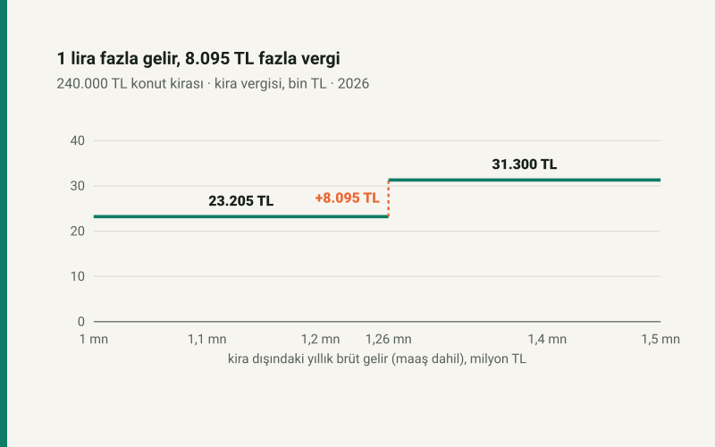

Kısa cevap
GVK m.21, konut kirasında 2026'da 58.000 TL istisna tanır ama iki durumda hiç tanımaz: ticari, zirai ya da mesleki kazancı için beyanname vermek zorunda olanlara ve ücret, kira ve diğer gelirlerinin gayri safi toplamı tarifenin üçüncü dilimindeki ücret tutarını (2026'da 1.500.000 TL) aşanlara.
Sınır bir eşiktir, kademe değil: 1 lira aşınca istisnanın tamamı gider. Ücretin brütü de toplama girer, beyan edilmese bile.
Dört kira düzeyinde sıçrama
| Yıllık konut kirası | Sınıra kadar diğer brüt gelir | Aylık brüt karşılığı | Sınırda vergi | 1 TL üstünde vergi | Sıçrama |
|---|---|---|---|---|---|
| 120.000 TL | 1.380.000 TL | 115.000 TL | 7.905,00 TL | 15.300,00 TL | 7.395,00 TL |
| 240.000 TL | 1.260.000 TL | 105.000 TL | 23.205,00 TL | 31.300,00 TL | 8.095,00 TL |
| 360.000 TL | 1.140.000 TL | 95.000 TL | 41.840,00 TL | 51.700,00 TL | 9.860,00 TL |
| 600.000 TL | 900.000 TL | 75.000 TL | 86.889,00 TL | 100.200,00 TL | 13.311,00 TL |
Kira büyüdükçe sınıra kadar kalan diğer gelir küçülür: yılda 600.000 TL kira alan, aylık brüt maaşı 75.000 TL'yi aştığında istisnayı kaybeder. Sıçramanın büyüklüğü istisnanın kendisinden (58.000 TL) değil, onun hangi dilime düştüğünden gelir.
Hesap nasıl yapıldı?
İstisna varken kiradan 58.000 TL düşülür, kalanın %15'i götürü gider olarak indirilir ve ücret dışı gelir tarifesi uygulanır. İstisna kalkınca aynı hesap 58.000 TL daha yüksek matrahla yapılır. Ücretin kendisi stopajla vergilendiği için beyana girmez; yalnızca sınır hesabında sayılır.
Nerede dikkat?
- Yıl içindeki zam, ikramiye ya da ikinci bir kira sınırı aşmanıza yol açabilir; sınır yıllık gayri safi toplama bakar.
- Kira istisnayı aşmıyorsa (yılda 58.000 TL ve altı) sınır uygulanmaz.
- Serbest meslek ya da ticari kazanç beyan edenler gelir tutarı ne olursa olsun istisnadan yararlanamaz.
Kendi durumunuz için: kira geliri vergisi hesaplama. Yatırım getirisi için: kira getirisi hesaplama.
Kaynaklar
- 193 sayılı Gelir Vergisi Kanunu m.21 (mesken kira istisnası ve gelir sınırı), m.74 (giderler), m.103 (tarife).
- Gelir Vergisi Genel Tebliği ile ilan edilen 2026 istisna tutarı ve tarife.
Tablo sitenin açık kaynaklı kira geliri motorundan üretilir; sınır tarifenin üçüncü dilim tutarından türetilir, elle yazılmaz, ve otomatik testle yeniden hesaplanır.
Sık sorulan sorular
Kira geliri istisnasından kimler yararlanamaz?
Ticari, zirai ya da mesleki kazancı için beyanname vermek zorunda olanlar ve kira dahil gayri safi gelir toplamı 2026'da 1.500.000 TL'yi aşanlar.
Maaş da kira istisnası sınırına dahil mi?
Evet. Ücretin brütü, beyan edilmese bile toplama girer. 240.000 TL kirası olan için sınır aylık brüt 105.000 TL maaşa denk gelir.
Sınırı 1 TL aşarsam ne olur?
İstisnanın tamamı düşer. 240.000 TL kirada vergi 23.205 TL'den 31.300 TL'ye çıkar: 8.095 TL fazla.